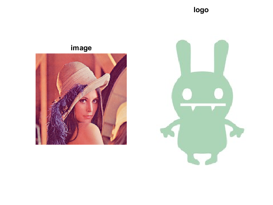
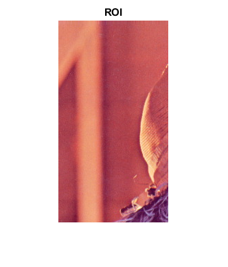
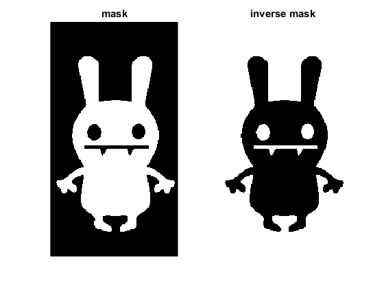
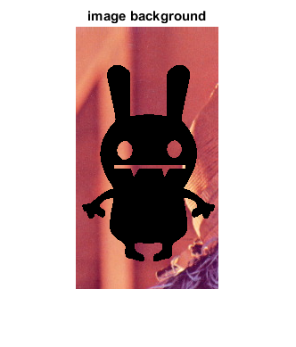
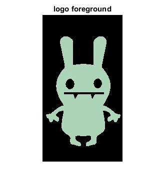
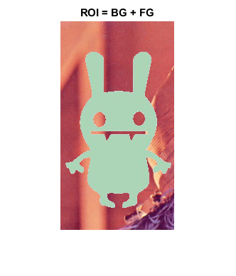
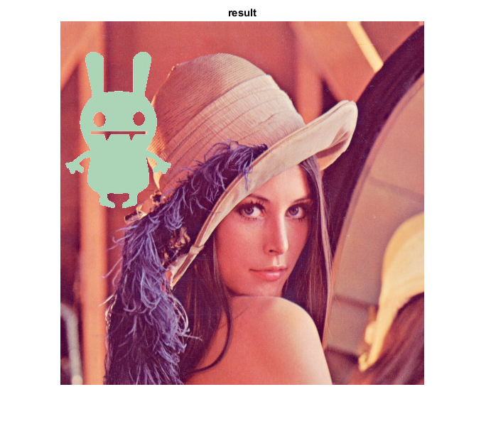

Bitwise Operations on Images
In this demo, we show how to perform arithmetic operations on images like addition, subtraction, bitwise operations, etc.
Sources:
Contents
Theory
You can add two images by OpenCV function, cv.add or simply by array addition, res = img1 + img2. Both images should be of same depth and type, or second image can just be a scalar value.
Bitwise operations inclue bitwise AND, OR, NOT and XOR operations. They will be highly useful while extracting any part of the image, defining and working with non-rectangular ROI etc. Below we will see an example on how to change a particular region of an image.
Code
We want to put a logo image above an image. If we add two images, it will change color. If we blend it, we get an transparent effect. But we want it to be opaque. If it was a rectangular region, we could use ROI, but the logo is a not a rectangular shape. So we can do it with bitwise operations.
Load two images
img1 = imread(fullfile(mexopencv.root(),'test','lena.jpg')); img2 = imread(fullfile(mexopencv.root(),'test','monster.jpg')); img2 = img2(:,1:160,:); % crop the part we want subplot(121), imshow(img1), title('image') subplot(122), imshow(img2), title('logo')
We want to put logo on top-left corner, so we create a ROI
img1_roi = img1(1:size(img2,1),1:size(img2,2),:);
figure, imshow(img1_roi), title('ROI')Create a mask of logo and create its inverse mask also
img2_gray = cv.cvtColor(img2, 'RGB2GRAY'); mask = cv.threshold(img2_gray, 'Otsu', 'Type','BinaryInv'); mask_inv = cv.bitwise_not(mask); figure subplot(121), imshow(mask), title('mask') subplot(122), imshow(mask_inv), title('inverse mask')
Now black-out the area of logo in ROI
img1_bg = cv.bitwise_and(img1_roi, img1_roi, 'Mask',mask_inv); figure, imshow(img1_bg), title('image background')
Take only region of logo from logo image
img2_fg = cv.bitwise_and(img2, img2, 'Mask',mask); figure, imshow(img2_fg), title('logo foreground')
Put logo in ROI
img1_roi = cv.add(img1_bg, img2_fg);
figure, imshow(img1_roi), title('ROI = BG + FG')Modify the main image using the updated ROI
img1(1:size(img2,1),1:size(img2,2),:) = img1_roi;
figure, imshow(img1), title('result')